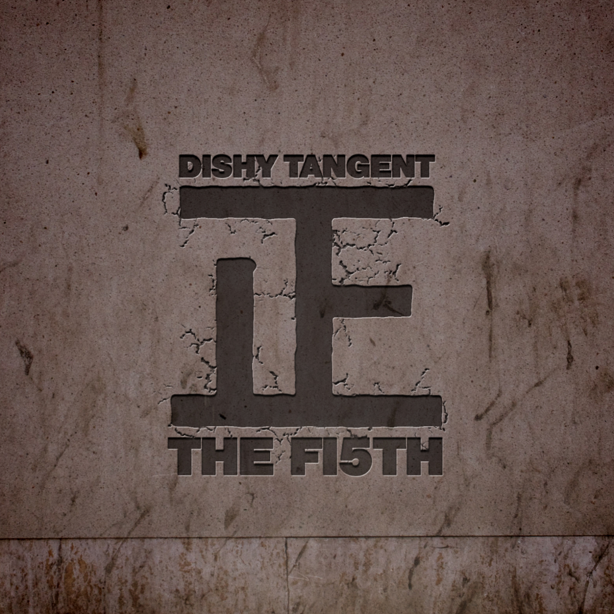

Muscle Memory Musik Studio
Muscle Memory Musik is an independent recording studio founded in 2005. Built and rebuilt over time, the studio has evolved through movement, collaboration, and hands-on creative work.
More than a recording space, the studio functions as a development hub — supporting artists, producers, and collectives at different stages of their journey.
Studio History
Muscle Memory Musik Studio is founded. The studio is built from the ground up, prioritising creative freedom and long-term artist growth.
Producers and engineers Young Max and Del aka Sonic were pivotal in early collaborations, forming the initial trio of producers and engineers alongside Louis aka Reason.
Dishy Tangent is formed by Reason and Matt Shilk. A genre-busting project blending live instrumentation, collaboration, and experimental production.
Sing Out Loud Sundays is founded by RM Moses. Muscle Memory Musik Studio becomes the HQ — hosting rehearsals, filmed sessions, and artist development.
A new wave of collaborations begins, including work with Swayla, reflecting the studio’s continued evolution into UKG and contemporary electronic sounds.
From this ecosystem, Ladder Records emerges as a collective — formalising years of collaboration, mentorship, and shared creative values.
Dishy Tangent
Dishy Tangent is a core project within the studio’s history. Founded in 2012 by Reason and Matt Shilk, the project explored genre-fluid songwriting and live-led production.
After Matt Shilk stepped away, Reason continued the project, collaborating with musicians including Sustainard (2014), Sonic & Dr Dish (2015), and Yung Blud (2018).
Recent releases include Clear (2021) and W.I.L.D. (2022), marking a mature and confident phase of the project.
Selected Works
A curated selection of releases shaped by the Muscle Memory Musik studio environment.


